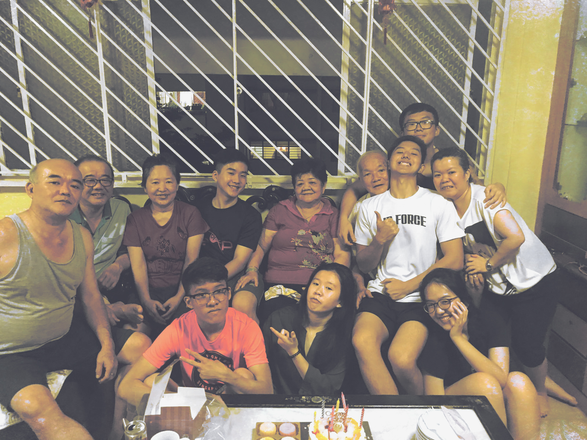
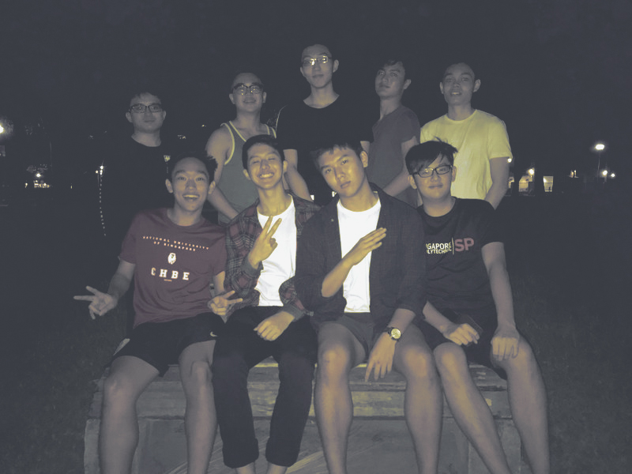
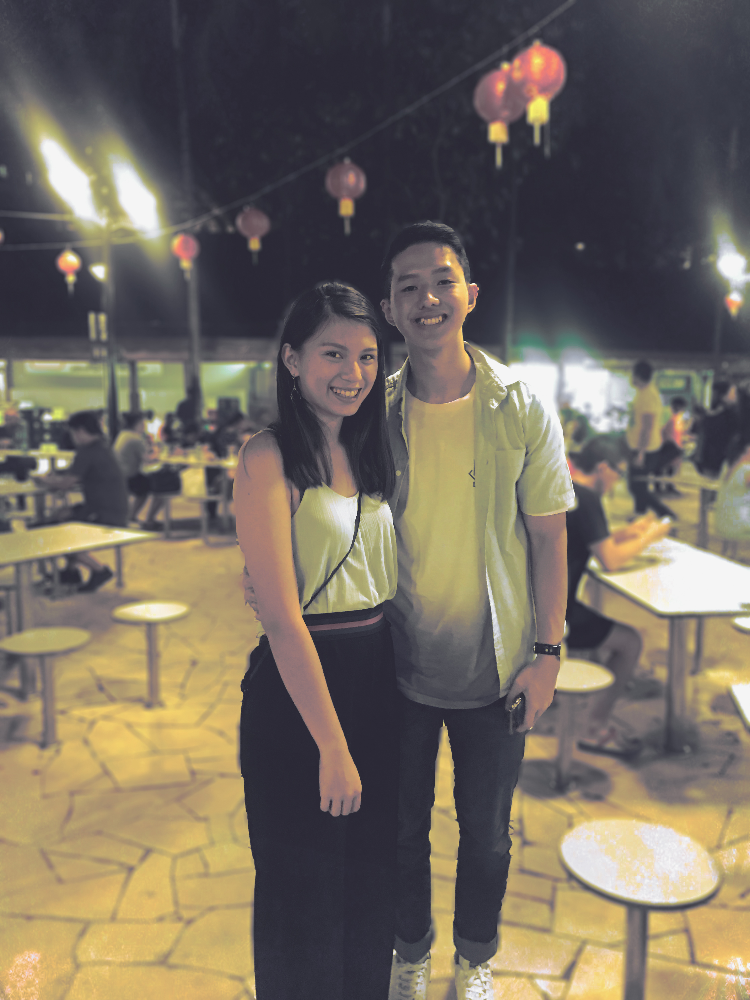

Important people to me
For this page, I would be sharing with you the people that I hold dearly to which I regard as an important part of me as well as important events that made me who I am today, for they have made a huge impact in my life.
• Needless to say, I regard my family as part of the important people in my life.They have been a constant support to me since the day I was born by sticking through almost every thick and thin with me and they also played a considerable role to making me who I am now. For that, I am very grateful to have them in my life and I could never imagine my life without them. 
• I have a few close friends who I met while I was growing up which I regard them as important people to me. From spending most of our time together in school at the canteen to staying back in school till late night for our night study, they have been a constant support to me not just in school but in my life generally. They have made the bad times in my life so much more bearable and I am very thankful to have them in my life. They are definitely who I can call "brothers from another mother".
• Last but definitely not the least, the other person that I hold very very dearly to is my girlfriend. She has been playing a very big part in my life. She constantly made me change for the better and is always a source of motivation and support to me when I needed it the most. She is also always there for me just like my family and good friends who have been sticking through the tough times with me and enjoying the good times together. That is why she is also very important to me.
Important events that occured
• The first event that I find important to me was my PSLE. As I did not do as great as I wanted myself to, I regretted not putting in enough effort to get what I wanted which made me learnt a very important lesson in life. And that is to put in my 100% in everything I do regardless how important or trivial they are. I also learnt from this event that I must not be overconfident in all situations and put in the necessary effort for everything.


• The second event that I find is important to me was my trip to Outward Bound Singapore (OBS). That was a Leadership camp at OBS which took place on the 15-19th of June 2015. I was taught important lessons through my one-of-a-kind experience during my time in OBS. I was put under a tough time (I was pushed to my physical and mental limits) during the expedition alongside with my groupmates which made me stronger, physically and mentally. It also allowed me to discover more about myself (the hidden capability and leadership quality that I have in me). I became more driven and confident after I attended this Leadership camp. I would never forget the time I complained the expedition was too tough and the satisfaction I felt from being the first group that completed the expedition (kayaking from OBS to the Causeway and back).